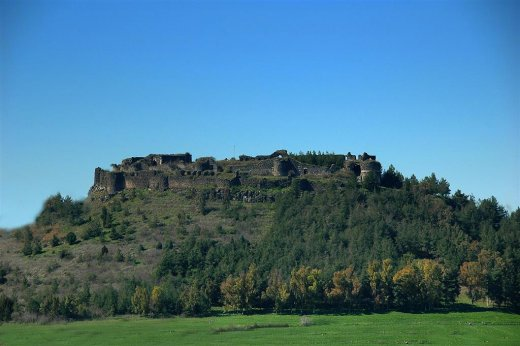

Toprakkale

Tarihi
Toprakkale ilçesi kökleri çok eski çağlara dayanan uygarlıkların yaşamış olduğu Çukurova’da kurulmuştur. Tarihi gelişimi Çukurova tarihi ile paralel özellik gösterir. Çukurova’ya ilk gelen kavim Luviler’dir. Milattan önce 17-16. yüzyılda Çukurovalılar güneydoğudan gelen göç dalgalarından korunmak için bir krallık kurmuşlardır. Geçmişte Kizvatno diye anılan bu krallık, M.Ö. 12. yüzyılın sonlarında Hitit devleti ve denizci kavimler tarafından çökertildiği halde o kargaşalıktan sıyrılmış ve Que adı ile tekrar ortaya çıkmıştır. M.Ö. 7. asrın 1. yarısında Çukurovalılar, Asurlulara yenilmelerine rağmen karamsarlığa düşmemişler bu imparatorluğun yıkılmasıyla (M.Ö.612) Kilikyalılar olarak eski krallıklarını diriltmişlerdir. Kilikya ismi; Finike hükümdarı Kilik’in adından gelmiştir. M.Ö. 6. yüzyılda Keyhüsrev zamanında bu bölge İranlılar’ın işgaline uğramıştır. M.Ö. 333 yılında Büyük İskender’in eline geçen bölge, Büyük İskender’in ölümüyle Selevkoslar’ın (Seleucus) payına düşmüştür. Güçlü komutan Pompeus’un izlediği yumuşak politika sonucunda M.S. 1. yüzyılın başlarında Roma İmparatorluğu’na katılan bölge, bilhassa Doğu Roma İmparatorluğu’nun yönetiminde uzun yıllar kalmıştır. Ortaçağın ilk yarısında bölge etnik yönden büyük değişikliklere uğramıştır. Bunun sebebi çok şiddetli depremlerin köy ve şehirleri yıkmış olması, bölge halkını dağıtmasıdır. İslâm orduları ilk kez 7. yüzyılda Halife Hz. Ömer zamanında bu bölgeye gelmişlerdir. Fakat burası asıl olarak Emevi halifesi Abdülmelik zamanında (685-705) ele geçirilmiştir. Abbasiler zamanında da müslümanlaştırılmıştır. 1071 Malazgirt Savaşı ile Türkler Anadolu’ya hızla yayılmışlar ve Anadolu’yu Türk yurdu yaparak, 11. yüzyılda Çukurova’ya yerleşmiştir. Türk komutanlarından aynı zamanda Anadolu Selçuklu Devleti’nin de kurucusu olan Süleyman Şah, 1082 yılında Kilikya ‘ya inerek Çukurova’yı tamamen fethetmiştir. Ancak bu fetih ile beraber Çukurova’da Türk hakimiyetinin kurulduğunu söylemek oldukça güçtür. Çünkü Türkler’in bu bölgedeki fetih politikasını izleyen askerî üstünlükleri kısa zamanda bölgeye Türkmenler’in yerleştirilememesi, belirli bir ekonomik düzen kurulmaması yüzünden sürekli hakimiyete ve yurt edinmeye dönüşememiştir. Haçlı seferleri sırasında da Çukurova’da Kilikya Ermeni Prensliği kurulup varlığını sürdürmüştür. Fakat 13. yüzyılda Kilikya Ermenileri’nin Anadolu’yu istila eden Moğollar ile işbirliği yapmaları, Selçuklular’ın aleyhine çalışmaları, hatta Çukurova limanlarını Mısır Memluklu Devleti yönünden yapacakları askerî harekatlar için Moğollar’ın emrine vermek istemeleri yüzünden, Memluklular karşı harekete geçerek Suriye’deki Türkmenleri bölgeye yerleştirmeye, dolayısıyla Ermeniler’in Çukurova’daki hakimiyetlerine son vermeye çalışmıştır. Ermeni Kralı 5. Leon’un (1382) ölmesiyle de Çukurova’da Türk nüfusuna dayalı fetihçi yurt edinme, sosyal-ekonomik hareket gerçekleşmiş Ermeniler’in siyasî hükümranlığı tasfiye edilmiştir. Böylece Çukurova Türkler tarafından tamamen fethedilmiştir. 14.yüzyıldan itibaren Mısır Memlukluları’na ve onlara bağlı olan Ramazanoğulları idaresine geçen bölge, bu dönemde imar edilmiştir. 1608 yılında Ramazanoğulları’nın Osmanlı Egemenliğine girmesiyle bölge de Osmanlı sınırlarına katılmıştır. 19. yüzyılın ilk yarısında Osmanlı Devleti’ne isyan eden Mısır Valisi Mehmet Ali Paşa tarafından bölge istila edilmiştir. 1833 Kütahya Anlaşması ile bölge Mısır’a bağlanmış ise de 1840 Londra Anlaşması ile yeniden Osmanlı idaresine geçmiştir. Toprakkale İlçesi de Osmanlı idaresi altındaki Cebel-i Bereket vilayetinin içinde yer almıştır. Toprakkale, Kurtuluş Savaşı sırasında da önemli bir rol oynamıştır. Toprakkale’nin stratejik konumundan dolayı, itilaf devletleri 30 Ekim 1918 Mondros Ateşkes Antlaşması’nın 7. maddesine dayanarak güvenliklerini tehdit ettiği gerekçesiyle bölgeyi işgal etmiştir. Bölgeyi ilk işgal eden devlet, Toprakkale Karabahadır mevkine tabur olarak yerleşerek Karaçay civarında bulunan Tepe Burnu’na kamp kuran İngilizler’dir. İngilizlerin bir aylık işgalinden sonra daha önce yapılan protokol gereği bölge Fransızlar’a terk edilmiş, Fransızlar da Toprakkale’yi karargah olarak kullanmıştır. Fransız işgali sırasında halk işgale tepki göstererek, Kuva-yı Milliye çetelerine çeşitli yardımda bulunmuş ve ilçe 29 Aralık 1920’de düşman işgalinden kurtulmuştur. 20 Ekim 1921 tarihinde imzalanan Ankara Antlaşması ile Fransızlar bölgeyi terk etmişlerdir. Daha önce Adana’ya bağlı Osmaniye ilçesinin bir kasabası olan Toprakkale, 24 Ekim 1996 tarih ve 4200 sayılı kanun ile Osmaniye’nin Türkiye Cumhuriyeti’nin 80. ili haline getirilmesiyle ilçe olmuş ve Osmaniye iline bağlanmıştır.
Coğrafi yapısı
Toprakkale adını, kendi sınırları içerisinde bulunan kaleden almıştır. Güneybatısı dağlarla çevrili olan ilçenin kuzey ve doğu yönleri göz alabildiğince ovadır. Çeşitli meyve ağaçları ve tabiî bitki örtüsüyle şirin bir ilçedir. Toprağından bolluk ve bereket yanında uygarlık fışkıran Toprakkale ilçesi yurdumuzun Akdeniz Bölgesi’nin Çukurova bölümünde yer almıştır. Osmaniye ilinin güneybatısında bulunan Toprakkale İlçesi; güneyde Hatay, batıda Adana, doğu ve kuzeyinde Osmaniye ili ile çevrilidir. Yüzölçümü 130 km2 olan Toprakkale ilçesinin toplam nüfusu 2000’de yapılan nüfus sayımına göre 14519’dur. Bu nüfusun 3/4 ‘ünden fazlası ilçe merkezinde yaşamaktadır. Toprakkale ilçesine bağlı 1 kasaba ve 5 adet köy bulunmaktadır. İlçede Akdeniz iklimi görülür. Yazlar sıcak ve kurak, kışlar ılık ve yağışlı geçer. Yağışlar sonbaharda başlar, ilkbahara kadar sürer. Amanoslar Akdeniz’den gelen yağmurları iç kesimlere bırakmadığı için Amanoslar’ın denize bakan yamaçları gür ormanlarla kaplıdır. İlçede ortalama yağış miktarı 610 mm olup yağışlar özellikle yağmur şeklindedir. Karaçay ilçenin en önemli ve tek akarsuyudur. Sulamada kullanılan ve Akdeniz’e dökülen Karaçay’ın taşıdığı su miktarı genelde yetersiz olup, mevsimlere göre değişir. İlçenin başlıca geçim kaynakları tarım ve hayvancılıktır. Toprakkale ilçesi çok verimli toprakları ile yurdumuzun belli başlı tarım bölgelerinden biridir. Tarım daha çok meyilli topraklarda, akarsu kenarlarında ve dalgalı arazilerde yapılır. İklim bölgede her çeşit ürünün yetişmesine elverişlidir. Tarım ürünü olarak en çok buğday, mısır, soya ve yer fıstığı yetiştirilir. Yağlı bitkiler, turunçgiller, sebze, meyve ve zeytin ekimi de yapılmaktadır. Aslantaş Barajı’nın yapılmasından sonra D.S.İ. kanalları ile iyi organize edilen sulama faaliyetleri sayesinde verim iyiden iyiye artmıştır. Tarım tamamıyla makineler ile yapılır. Hayvancılık ilçenin tarımdan sonra gelen en büyük geçim kaynağıdır. İlçe iklim ve bitki örtüsü bakımından her çeşit hayvanın yetiştirilmesine elverişlidir. Koyun, keçi, sığır,hindi ve tavuk ilçede beslenen başlıca evcil hayvanlar olup, arıcılık da gelişmektedir. Toprakkale, Adana-Osmaniye-Gaziantep Otoyolu, Osmaniye- Adana- Gaziantep D-400 karayolu, Hatay-Toprakkale D-817 karayolunun çevrelediği, Haydarpaşa- Bağdat demiryolunun geçtiği bir noktada olup Osmaniye iline 8 km. mesafededir. Akdeniz’le bağlantısı olup, sahile uzaklığı 23 km; rakımı ise 123’ tür. Maden yatakları bakımından fakir olan ilçede, maden kömürü, linyit, odun başlıca enerji kaynaklarıdır. Turizm Değerleri İlçenin başlıca turistik yeri ve tarihi eseri, Toprakkale Kalesi’dir. Kale M.Ö. 312-64 yılları arasında Selevkoslar (Selefküsler) tarafından 75 m. yükseklikteki yığma bir tepe üzerinde kurulmuştur. Abbasiler döneminde Harun Reşit’ in Çukurova’yı fethinde (786) siyah taş kullanılarak yeniden yapılmıştır. İskenderun-Osmaniye yol kavşağında bulunan kaleye Abbasiler “Al-Kenisat-Tüs Savda” (Kara Kilise), Hamdaniler (10.yy) “Tel-Hamdün" adını vermişlerdir. Kaledeki beyaz taş dekorasyon ve yuvarlak formlu mazgal delikleri Memluk dönemi mimarisi üslubundadır. Kale 1517’den sonra Osmanlı döneminde bir süre kışla olarak kullanılmış ve terk edilmiştir. Osmanlılar’ın “Kınık Kalesi “ dedikleri Toprakkale; Çardak, Bodrum Kalesi, Hemite, Anavarza ve Tumlu Kalelerinin görüş ve kontrol alanı içerisindedir. Çevresi dış surlarla çevrili olup 12 burcu vardır. Yuvarlak burçları kalın surlarla birbirine bağlanmıştır.Osmaniye’ye 7 km asfalt yolla bağlı olan Toprakkale 1966 yılında restore edilmiş ve çevresi ağaçlandırılmıştır.Toprakkale Kalesinin kuzeyinde, Adana yolu üzerinde eski Kınık Şehri (Örenşar) mevcuttur.
Sayfa Geri Dön